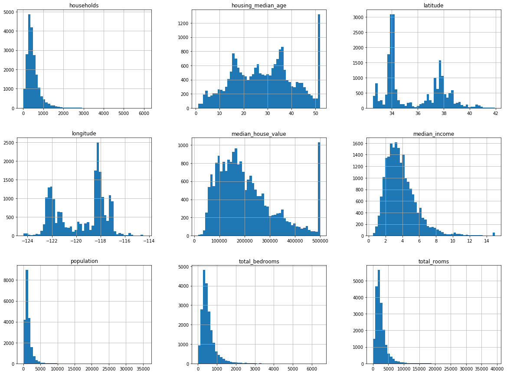
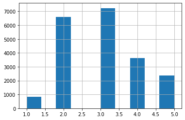
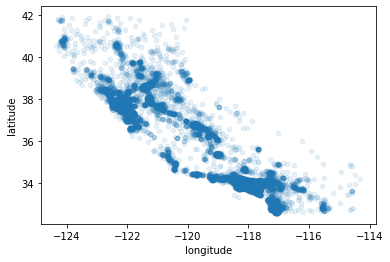
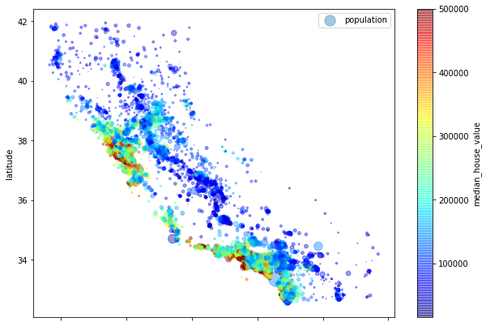
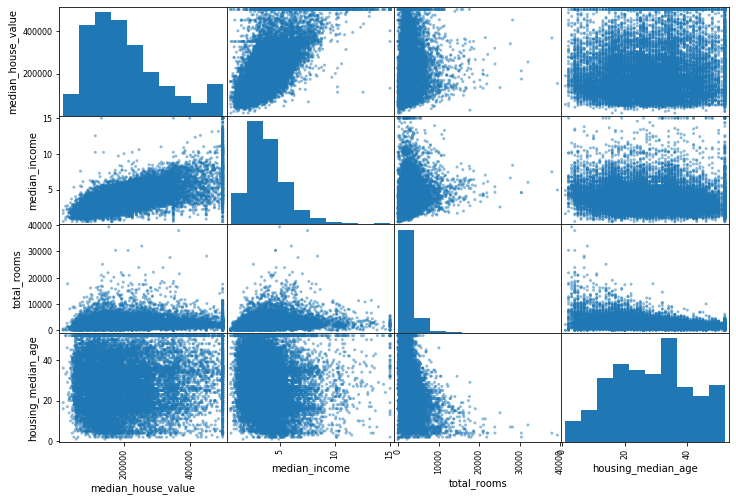
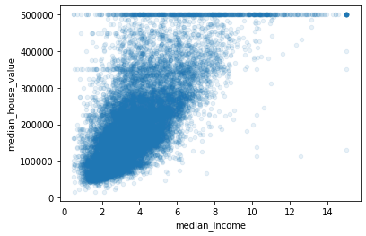

Notes
Main Steps:
- Frame the problem
- Get data
- EDA (exploratory data analysis)
- Prepare the data for ML
- Model Selection
- Tune the model
- Present solution
- Launch, monitor, iterate
Look at the big picture
- predict the median housing price for a district in CA
- what’s the business objective (not building a model for fun)
- ask: what is the current, non-ML solution? why can’t we use that
- start thinking about/designing the system
Pipelines
- sequence of data processing components
- typically runs asynchronously:
- When you execute something synchronously, you wait for it to finish before moving on to another task. When you execute something asynchronously, you can move on to another task before it finishes.
- components are self contained, downstream components can keep working for a while by just using the last output from the broken component (async)
Types of Regression
- multiple regression: multiple features to make a prediction
- univariate regression: only trying to predict a single value
Selecting a performance measure
- Root Mean Square Error (RMSE):
$$ RMSE(X,h) = \sqrt{\frac{1}{m} \sum_{i=1}^{m} (h(x^{(i)}) - y^{(i)})^{2}} $$
- gives higher weight to larger errors
- lowercase italic font for scalars, lowercase bold for vectors, uppercase bold for matrices
- if there are many outliers, then Mean Absolute Error (MAE) might be a better cost function:
$$ MAE(X,h) = \frac{1}{m} \sum_{i=1}^{m} \lvert h(x^{(i)}) - y^{(i)}\rvert$$
- different ways to measure difference between vectors
- RMSE is euclidian distance, $l_2$ norm
- computing sum of absolutes is $l_1$ norm, measures the distance between two points if you can only travel along orthogonal (perpendicular) lines
- $l_0$ just gives the number of non-zero elements in vector
- higher the norm index, the more it focuses on large values and neglects smaller ones. this is why RMSE is more sensitive to outliers than MAE
Verify Assumptions
- list and verify assumptions
- e.g. what does the output exactly need to be, what do we think is true about the problem/solution we’ve proposed
Get the Data
- usually data is in DBs or spread across many files, so common first step is jumping through the hoops of access, getting used to schemas, legal precautions, etc.
- best to automate process of fetching data, future proof against changes
import os
import tarfile
from six.moves import urllib
DOWNLOAD_ROOT = "https://raw.githubusercontent.com/ageron/handson-ml/master/"
HOUSING_PATH = os.path.join("datasets", "housing")
HOUSING_URL = DOWNLOAD_ROOT + "datasets/housing/housing.tgz"
def fetch_housing_data(housing_url=HOUSING_URL, housing_path=HOUSING_PATH):
if not os.path.isdir(housing_path):
os.makedirs(housing_path)
tgz_path = os.path.join(housing_path, "housing.tgz")
urllib.request.urlretrieve(housing_url, tgz_path)
housing_tgz = tarfile.open(tgz_path)
housing_tgz.extractall(path=housing_path)
housing_tgz.close()
fetch_housing_data()
import pandas as pd
def load_housing_data(housing_path=HOUSING_PATH):
csv_path = os.path.join(HOUSING_PATH, "housing.csv")
return pd.read_csv(csv_path)
housing = load_housing_data()
housing.head()
| longitude | latitude | housing_median_age | total_rooms | total_bedrooms | population | households | median_income | median_house_value | ocean_proximity | |
|---|---|---|---|---|---|---|---|---|---|---|
| 0 | -122.23 | 37.88 | 41.0 | 880.0 | 129.0 | 322.0 | 126.0 | 8.3252 | 452600.0 | NEAR BAY |
| 1 | -122.22 | 37.86 | 21.0 | 7099.0 | 1106.0 | 2401.0 | 1138.0 | 8.3014 | 358500.0 | NEAR BAY |
| 2 | -122.24 | 37.85 | 52.0 | 1467.0 | 190.0 | 496.0 | 177.0 | 7.2574 | 352100.0 | NEAR BAY |
| 3 | -122.25 | 37.85 | 52.0 | 1274.0 | 235.0 | 558.0 | 219.0 | 5.6431 | 341300.0 | NEAR BAY |
| 4 | -122.25 | 37.85 | 52.0 | 1627.0 | 280.0 | 565.0 | 259.0 | 3.8462 | 342200.0 | NEAR BAY |
housing.info()
<class 'pandas.core.frame.DataFrame'>
RangeIndex: 20640 entries, 0 to 20639
Data columns (total 10 columns):
longitude 20640 non-null float64
latitude 20640 non-null float64
housing_median_age 20640 non-null float64
total_rooms 20640 non-null float64
total_bedrooms 20433 non-null float64
population 20640 non-null float64
households 20640 non-null float64
median_income 20640 non-null float64
median_house_value 20640 non-null float64
ocean_proximity 20640 non-null object
dtypes: float64(9), object(1)
memory usage: 1.6+ MB
housing["ocean_proximity"].value_counts()
<1H OCEAN 9136
INLAND 6551
NEAR OCEAN 2658
NEAR BAY 2290
ISLAND 5
Name: ocean_proximity, dtype: int64
housing.describe()
| longitude | latitude | housing_median_age | total_rooms | total_bedrooms | population | households | median_income | median_house_value | |
|---|---|---|---|---|---|---|---|---|---|
| count | 20640.000000 | 20640.000000 | 20640.000000 | 20640.000000 | 20433.000000 | 20640.000000 | 20640.000000 | 20640.000000 | 20640.000000 |
| mean | -119.569704 | 35.631861 | 28.639486 | 2635.763081 | 537.870553 | 1425.476744 | 499.539680 | 3.870671 | 206855.816909 |
| std | 2.003532 | 2.135952 | 12.585558 | 2181.615252 | 421.385070 | 1132.462122 | 382.329753 | 1.899822 | 115395.615874 |
| min | -124.350000 | 32.540000 | 1.000000 | 2.000000 | 1.000000 | 3.000000 | 1.000000 | 0.499900 | 14999.000000 |
| 25% | -121.800000 | 33.930000 | 18.000000 | 1447.750000 | 296.000000 | 787.000000 | 280.000000 | 2.563400 | 119600.000000 |
| 50% | -118.490000 | 34.260000 | 29.000000 | 2127.000000 | 435.000000 | 1166.000000 | 409.000000 | 3.534800 | 179700.000000 |
| 75% | -118.010000 | 37.710000 | 37.000000 | 3148.000000 | 647.000000 | 1725.000000 | 605.000000 | 4.743250 | 264725.000000 |
| max | -114.310000 | 41.950000 | 52.000000 | 39320.000000 | 6445.000000 | 35682.000000 | 6082.000000 | 15.000100 | 500001.000000 |
- percentiles: what percentage of the data falls beneath this point. i.e. if 50th percentile is 100 for an attribute that means half of all the samples have a value less than 100 for that attribute
- if mean varies a lot from median that speaks to the presence of outliers pulling it up/down
%matplotlib inline
import matplotlib.pyplot as plt
housing.hist(bins=50, figsize=(20,15))
plt.show()

- Median income doesn’t seem to be expressed as USD
- Median house value and age seem to be capped
- features have different scales (needs feature scaling)
Create a test set
- before anything else, set aside test set
- this will avoid data snooping bias; i.e. fitting the model to better generalize on the test set
import numpy as np
def split_train_test(data, test_ratio):
shuffled_indices = np.random.permutation(len(data))
test_set_size = int(len(data) * test_ratio)
test_indices = shuffled_indices[:test_set_size]
train_indices = shuffled_indices[test_set_size:]
return data.iloc[train_indices], data.iloc[test_indices]
train_set, test_set = split_train_test(housing, 0.2)
len(train_set)
16512
len(test_set)
4128
- this function will regenerate different sets on each run
- you can seed the random number generator, but this breaks if you add new data to the dataset (regenerates new train/test)
- eventually data you’ve trained on before will make it into the test set on multiple reruns with this pipeline
- can use each instance’s indentifier (assuming unique and immutable) to decide whether or not it should go in the test set
- code below computes a hash of each instance’s indentifier and puts that instance in the test set if hash is lower or equal to 20% of the maximum hash value. ensures consistency across multiple runs, and the test set will always contain 20% of the new data, but never any instance that was previously in the training set
from zlib import crc32
def test_set_check(identifier, test_ratio):
return crc32(np.int64(identifier)) & 0xffffffff < test_ratio * 2**32
def split_train_test_by_id(data, test_ratio, id_column):
ids = data[id_column]
in_test_set = ids.apply(lambda id_: test_set_check(id_, test_ratio))
return data.loc[~in_test_set], data.loc[in_test_set]
housing_with_id = housing.reset_index()
train_set, test_set = split_train_test_by_id(housing_with_id, 0.2, "index")
train_set
| index | longitude | latitude | housing_median_age | total_rooms | total_bedrooms | population | households | median_income | median_house_value | ocean_proximity | |
|---|---|---|---|---|---|---|---|---|---|---|---|
| 0 | 0 | -122.23 | 37.88 | 41.0 | 880.0 | 129.0 | 322.0 | 126.0 | 8.3252 | 452600.0 | NEAR BAY |
| 1 | 1 | -122.22 | 37.86 | 21.0 | 7099.0 | 1106.0 | 2401.0 | 1138.0 | 8.3014 | 358500.0 | NEAR BAY |
| 3 | 3 | -122.25 | 37.85 | 52.0 | 1274.0 | 235.0 | 558.0 | 219.0 | 5.6431 | 341300.0 | NEAR BAY |
| 4 | 4 | -122.25 | 37.85 | 52.0 | 1627.0 | 280.0 | 565.0 | 259.0 | 3.8462 | 342200.0 | NEAR BAY |
| 6 | 6 | -122.25 | 37.84 | 52.0 | 2535.0 | 489.0 | 1094.0 | 514.0 | 3.6591 | 299200.0 | NEAR BAY |
| ... | ... | ... | ... | ... | ... | ... | ... | ... | ... | ... | ... |
| 20635 | 20635 | -121.09 | 39.48 | 25.0 | 1665.0 | 374.0 | 845.0 | 330.0 | 1.5603 | 78100.0 | INLAND |
| 20636 | 20636 | -121.21 | 39.49 | 18.0 | 697.0 | 150.0 | 356.0 | 114.0 | 2.5568 | 77100.0 | INLAND |
| 20637 | 20637 | -121.22 | 39.43 | 17.0 | 2254.0 | 485.0 | 1007.0 | 433.0 | 1.7000 | 92300.0 | INLAND |
| 20638 | 20638 | -121.32 | 39.43 | 18.0 | 1860.0 | 409.0 | 741.0 | 349.0 | 1.8672 | 84700.0 | INLAND |
| 20639 | 20639 | -121.24 | 39.37 | 16.0 | 2785.0 | 616.0 | 1387.0 | 530.0 | 2.3886 | 89400.0 | INLAND |
16512 rows × 11 columns
-
note: this approach looks fugazi, indices aren’t shuffled
-
the problem still exists but would need a better implementation than what’s here
-
if you use row index as a unique identifier, you must make sure that new data always gets appended to the end of the dataset and a row is never deleted
-
instead, you can try to engineer a unique ID for each row by combining some of the (ideally most stable/constant) features
-
e.g. a district’s latitude/longitude is guaranteed to be stable for a few million years lol:
housing_with_id['id'] = housing["longitude"] * 1000 + housing["latitude"]
train_set, test_set = split_train_test_by_id(housing_with_id, 0.2, "id")
len(housing_with_id)
20640
len(housing_with_id["id"].unique()) # also fugazi
12590
- the approach above in the book obviously doesn’t work haha
from sklearn.model_selection import train_test_split
train_set, test_set = train_test_split(housing, test_size=0.2, random_state=42)
train_set
| longitude | latitude | housing_median_age | total_rooms | total_bedrooms | population | households | median_income | median_house_value | ocean_proximity | |
|---|---|---|---|---|---|---|---|---|---|---|
| 14196 | -117.03 | 32.71 | 33.0 | 3126.0 | 627.0 | 2300.0 | 623.0 | 3.2596 | 103000.0 | NEAR OCEAN |
| 8267 | -118.16 | 33.77 | 49.0 | 3382.0 | 787.0 | 1314.0 | 756.0 | 3.8125 | 382100.0 | NEAR OCEAN |
| 17445 | -120.48 | 34.66 | 4.0 | 1897.0 | 331.0 | 915.0 | 336.0 | 4.1563 | 172600.0 | NEAR OCEAN |
| 14265 | -117.11 | 32.69 | 36.0 | 1421.0 | 367.0 | 1418.0 | 355.0 | 1.9425 | 93400.0 | NEAR OCEAN |
| 2271 | -119.80 | 36.78 | 43.0 | 2382.0 | 431.0 | 874.0 | 380.0 | 3.5542 | 96500.0 | INLAND |
| ... | ... | ... | ... | ... | ... | ... | ... | ... | ... | ... |
| 11284 | -117.96 | 33.78 | 35.0 | 1330.0 | 201.0 | 658.0 | 217.0 | 6.3700 | 229200.0 | <1H OCEAN |
| 11964 | -117.43 | 34.02 | 33.0 | 3084.0 | 570.0 | 1753.0 | 449.0 | 3.0500 | 97800.0 | INLAND |
| 5390 | -118.38 | 34.03 | 36.0 | 2101.0 | 569.0 | 1756.0 | 527.0 | 2.9344 | 222100.0 | <1H OCEAN |
| 860 | -121.96 | 37.58 | 15.0 | 3575.0 | 597.0 | 1777.0 | 559.0 | 5.7192 | 283500.0 | <1H OCEAN |
| 15795 | -122.42 | 37.77 | 52.0 | 4226.0 | 1315.0 | 2619.0 | 1242.0 | 2.5755 | 325000.0 | NEAR BAY |
16512 rows × 10 columns
- the above are random sampling methods which work well enough on a large dataset
- if the dataset is small then you should do stratified sampling (i.e. take steps to ensure that the sample is representative of the whole pop.)
- divide the data into different groups (strata) and randomly sample from those in a way which is representative
- e.g. stratify by median income:
# use pd.cut to bin the median income into categories
housing['income_cat'] = pd.cut(housing['median_income'],
bins=[0., 1.5, 3., 4.5, 6., np.inf],
labels=[1, 2, 3, 4, 5])
housing['income_cat'].hist()
<matplotlib.axes._subplots.AxesSubplot at 0x7fcc82c0cf90>

from sklearn.model_selection import StratifiedShuffleSplit
split = StratifiedShuffleSplit(n_splits=1, test_size=0.2, random_state=42)
for train_index, test_index in split.split(housing, housing['income_cat']):
strat_train_set = housing.loc[train_index]
strat_test_set = housing.loc[test_index]
# checking to see if it worked as expected
strat_test_set["income_cat"].value_counts()/len(strat_test_set)
3 0.350533
2 0.318798
4 0.176357
5 0.114583
1 0.039729
Name: income_cat, dtype: float64
- the stratified sampling matches the proportions seen in the histogram; the test set in this instance is representative of the income_cat distribution found in the whole dataset
- now remove income_cat attribute to restore data to original form
for set_ in (strat_train_set, strat_test_set):
set_.drop("income_cat", axis=1, inplace=True)
Discover and Visualize the Data to Gain Insights (EDA)
- only explore the training set, pust the test set aside
- if training set is large, you might want to just explore a sample to make manipulations faster
- create a copy of the training set so you can play around without harming it
Visualizing Geographical Data:
housing = strat_train_set.copy()
housing.plot(kind='scatter', x='longitude', y='latitude', alpha=0.1)
<matplotlib.axes._subplots.AxesSubplot at 0x7fcc822c8990>

- Can visualize density in the geographical viz with lower alpha
housing.plot(kind='scatter', x='longitude', y='latitude', alpha=0.4,
s=housing['population']/100, label='population', figsize=(10,7),
c='median_house_value', cmap=plt.get_cmap('jet'), colorbar=True)
plt.legend()
<matplotlib.legend.Legend at 0x7fcc80e608d0>

- prices are higher along the coast (duh), with some hotspots in the bay area and around LA
- could use a clustering algo to find many clusters, and then create features that measure proximity to the cluster centers
- Ocean proxmity is useful feature
Look for correlations:
- standard correlation coefficient only measures linear relationships, misses any other kinds
corr_matrix = housing.corr()
corr_matrix['median_house_value'].sort_values(ascending=False)
median_house_value 1.000000
median_income 0.687160
total_rooms 0.135097
housing_median_age 0.114110
households 0.064506
total_bedrooms 0.047689
population -0.026920
longitude -0.047432
latitude -0.142724
Name: median_house_value, dtype: float64
from pandas.plotting import scatter_matrix
attributes = ['median_house_value', 'median_income', 'total_rooms', 'housing_median_age']
scatter_matrix(housing[attributes], figsize=(12,8))
plt.show()

- diagonal lines are histograms of attributes
# focus on median income
housing.plot(kind='scatter', x='median_income', y='median_house_value', alpha=0.1)
<matplotlib.axes._subplots.AxesSubplot at 0x7fcc83a74110>

- clear correlation
- can also see the cap at $500k quite clearly
- other less visible lines at \$350K, $450K; might want to remove from data to stop model from picking up on quirks
Experimenting with Attribute Combinations
- EDA shows some interesting correlations so far
- some attributes are tail heavy, so could transform to normal distribution by taking their log
- can take combinations of features to get relationships; some attributes make less sense when considered independently
- e.g. compute avg. rooms per household as rooms/households
housing['rooms_per_household'] = housing['total_rooms']/housing['households']
housing['bedrooms_per_room'] = housing['total_bedrooms']/housing['total_rooms']
housing['population_per_household'] = housing['population']/housing['households']
# check corr matrix again
corr_matrix = housing.corr()
corr_matrix['median_house_value'].sort_values(ascending=False)
median_house_value 1.000000
median_income 0.687160
rooms_per_household 0.146285
total_rooms 0.135097
housing_median_age 0.114110
households 0.064506
total_bedrooms 0.047689
population_per_household -0.021985
population -0.026920
longitude -0.047432
latitude -0.142724
bedrooms_per_room -0.259984
Name: median_house_value, dtype: float64
- bedrooms per room is much more correlated (negatively) to median house value than total rooms/bedrooms
- houses with a lower bedroom/room ratio seem to be more expensive
- EDA doesn’t need to be completely thorough, point is to get insights that will get you a reasonably decent prototype
- iterative process
Prepare the Data for Machine Learning Algorithms
write functions to prepare data because:
- can reproduce on fresh data
- build a library of transformation functions
- can use in live system
- easier experimentation
housing = strat_train_set.drop("median_house_value", axis=1)
housing_labels = strat_train_set["median_house_value"].copy()
Handling Missing Values
- 3 options:
- get rid of of corresponding samples
- get rid of the entire attribute
- impute values to (mean, median, etc)
from sklearn.impute import SimpleImputer
imputer = SimpleImputer(strategy="median")
# create copy of numerical features
housing_num = housing.drop("ocean_proximity", axis=1)
imputer.fit(housing_num)
imputer.statistics_
array([-118.51 , 34.26 , 29. , 2119.5 , 433. , 1164. ,
408. , 3.5409])
X = imputer.transform(housing_num)
housing_tr = pd.DataFrame(X, columns=housing_num.columns)
Handling Text and Categorical Attributes
- encode to numerical values
housing_cat = housing[["ocean_proximity"]]
from sklearn.preprocessing import OrdinalEncoder
ordinal_encoder = OrdinalEncoder()
housing_cat_encoded = ordinal_encoder.fit_transform(housing_cat)
housing_cat_encoded[:5]
array([[0.],
[0.],
[4.],
[1.],
[0.]])
ordinal_encoder.categories_
[array(['<1H OCEAN', 'INLAND', 'ISLAND', 'NEAR BAY', 'NEAR OCEAN'],
dtype=object)]
- ordinal encoding places ranking on the attributes, so some algos might interpret nearby values as similar (4&3 are more similar than 1&7, although these are all just arbitrary indices)
- for nominal categories its better to one-hot encode them; create a binary attribute per category
- also known as creating dummy variables
from sklearn.preprocessing import OneHotEncoder
cat_encoder = OneHotEncoder()
housing_cat_1hot = cat_encoder.fit_transform(housing_cat)
housing_cat_1hot
<16512x5 sparse matrix of type '<class 'numpy.float64'>'
with 16512 stored elements in Compressed Sparse Row format>
- sparse matrices don’t use memory to store zero elements
cat_encoder.categories_
[array(['<1H OCEAN', 'INLAND', 'ISLAND', 'NEAR BAY', 'NEAR OCEAN'],
dtype=object)]
- if a categorical attribute has a large number of categories, one hot encoding will create a large number of input features and may hurt performance. in this case embeddings are useful (denser representations)
Custom Transformers
- write to align with Scikit-Learn so you can use pipelines
- add hyperparameters to gate any data preparation steps you aren’t sure about
from sklearn.base import BaseEstimator, TransformerMixin
rooms_ix, bedrooms_ix, population_ix, households_ix = 3, 4, 5, 6
class CombinedAttributesAdder(BaseEstimator, TransformerMixin):
def __init__(self, add_bedrooms_per_room = True): # no *args or **kargs
self.add_bedrooms_per_room = add_bedrooms_per_room
def fit(self, X, y=None):
return self # nothing else to do
def transform(self, X, y=None):
rooms_per_household = X[:, rooms_ix] / X[:, households_ix]
population_per_household = X[:, population_ix] / X[:, households_ix]
if self.add_bedrooms_per_room:
bedrooms_per_room = X[:, population_ix] / X[:, rooms_ix]
return np.c_[X, rooms_per_household, population_per_household, bedrooms_per_room]
else:
return np.c_[X, rooms_per_household, population_per_household]
attr_adder = CombinedAttributesAdder(add_bedrooms_per_room=False)
housing_extra_attribs = attr_adder.transform(housing.values)
np.c_ stacks arrays on their last axis (turns column vectors into a matrix)
np.c_[np.array([1,2,3]), np.array([4,5,6])]
array([[1, 4],
[2, 5],
[3, 6]])
Feature Scaling:
-
ML algos don’t perform well when features have different scales
-
Two ways to feature scale:
-
min-max scaling: attributes are shifted and rescaled so they range from 0-1. $$x_{scaled} = \frac{x_n - x_{min}}{x_{max} - x_{min}}$$
-
standardization: subtract the mean and divide by standard deviation
-
standardization is less affected by outliers in the data $$x_{scaled} = \frac{x_n - {\bar{x}}}{\sigma}$$
-
fit all transformers to the training set, then use them on the test
Transformation Pipelines
from sklearn.pipeline import Pipeline
from sklearn.preprocessing import StandardScaler
num_pipeline = Pipeline([
('imputer', SimpleImputer(strategy="median")),
('attribs_adder', CombinedAttributesAdder()),
('std_scaler', StandardScaler())
])
housing_num_tr = num_pipeline.fit_transform(housing_num)
- calls
fit_transform()on all of the transformers sequentially
from sklearn.compose import ColumnTransformer
num_attribs = list(housing_num)
cat_attribs = ["ocean_proximity"]
full_pipeline = ColumnTransformer([
("num", num_pipeline, num_attribs),
("cat", OneHotEncoder(), cat_attribs),
])
housing_prepared = full_pipeline.fit_transform(housing)
Select and Train a Model
Training and Evaluating on the Training Set
- preprocessing steps make training models simple
from sklearn.linear_model import LinearRegression
lin_reg = LinearRegression()
lin_reg.fit(housing_prepared, housing_labels)
LinearRegression(copy_X=True, fit_intercept=True, n_jobs=None, normalize=False)
some_data = housing.iloc[:5]
some_labels = housing_labels.iloc[:5]
some_data_prepared = full_pipeline.transform(some_data)
print(f"Predictions: {lin_reg.predict(some_data_prepared)}")
print(f"Labels: {list(some_labels)}")
Predictions: [211944.80589799 321295.84907457 210851.33029021 62359.51850965
194954.19182968]
Labels: [286600.0, 340600.0, 196900.0, 46300.0, 254500.0]
from sklearn.metrics import mean_squared_error
housing_predictions = lin_reg.predict(housing_prepared)
lin_mse = mean_squared_error(housing_labels, housing_predictions)
lin_rmse = np.sqrt(lin_mse)
print(lin_rmse)
68898.54780411992
- error of \$68K here isn’t very satisfying (housing prices range from \$120K to \$265K)
- if a model is underfitting the data it means that the features don’t provide enough information to make good decisions, or model is too weak
from sklearn.tree import DecisionTreeRegressor
tree_reg = DecisionTreeRegressor()
tree_reg.fit(housing_prepared, housing_labels)
DecisionTreeRegressor(criterion='mse', max_depth=None, max_features=None,
max_leaf_nodes=None, min_impurity_decrease=0.0,
min_impurity_split=None, min_samples_leaf=1,
min_samples_split=2, min_weight_fraction_leaf=0.0,
presort=False, random_state=None, splitter='best')
housing_predictions = tree_reg.predict(housing_prepared)
tree_mse = mean_squared_error(housing_labels, housing_predictions)
tree_rmse = np.sqrt(tree_mse)
tree_rmse
0.0
Better Evaluation with Cross Validation
- K-fold Cross Validation splits the training set into K folds, training the model K times by testing on one of the folds and composing the training set on the remaining K-1
- Sklearns CV feature expects a utility function (greater is better) as opposed to a cost function (lower is better), so the scoring function is actually opposite of MSE, which is why the following code uses
-scoresin the square root
from sklearn.model_selection import cross_val_score
scores = cross_val_score(tree_reg, housing_prepared, housing_labels,
scoring="neg_mean_squared_error", cv=10)
tree_rmse_scores = np.sqrt(-scores)
def display_scores(scores):
print("Scores:", scores)
print("Mean:", scores.mean())
print("Standard Deviation", scores.std())
display_scores(tree_rmse_scores)
Scores: [67971.85204287 67101.92229431 69341.35567834 66956.22248918
69739.80377843 72468.59865874 66736.84144169 67241.24548885
72220.02744352 70187.38922156]
Mean: 68996.52585375118
Standard Deviation 2037.77518366374
- CV not only allows you to get an averaged estimate of model’s performance, but allows you to get an idea of how precise this estimate is through the standard deviation
lin_scores = cross_val_score(lin_reg, housing_prepared, housing_labels,
scoring="neg_mean_squared_error", cv=10)
lin_rmse_scores = np.sqrt(-lin_scores)
display_scores(lin_rmse_scores)
Scores: [67500.31361237 68404.48325957 68239.95757613 74813.56736728
68419.88576794 71632.92651865 65216.31837467 68702.06708289
71793.11060978 68131.30099374]
Mean: 69285.3931163006
Standard Deviation 2576.7108344336184
from sklearn.ensemble import RandomForestRegressor
forest_reg = RandomForestRegressor()
forest_reg.fit(housing_prepared, housing_labels)
/Users/willbarker/anaconda3/lib/python3.7/site-packages/sklearn/ensemble/forest.py:245: FutureWarning: The default value of n_estimators will change from 10 in version 0.20 to 100 in 0.22.
"10 in version 0.20 to 100 in 0.22.", FutureWarning)
RandomForestRegressor(bootstrap=True, criterion='mse', max_depth=None,
max_features='auto', max_leaf_nodes=None,
min_impurity_decrease=0.0, min_impurity_split=None,
min_samples_leaf=1, min_samples_split=2,
min_weight_fraction_leaf=0.0, n_estimators=10,
n_jobs=None, oob_score=False, random_state=None,
verbose=0, warm_start=False)
forest_mse = mean_squared_error(housing_labels, forest_reg.predict(housing_prepared))
forest_rmse = np.sqrt(forest_mse)
print(forest_rmse)
21923.44698175341
forest_scores = cross_val_score(forest_reg, housing_prepared,
housing_labels,
scoring="neg_mean_squared_error", cv=10)
forest_rmse_scores = np.sqrt(-forest_scores)
display_scores(forest_rmse_scores)
Scores: [50985.57169248 49600.72682606 50759.78939086 54557.52337524
51089.83837069 55891.91762608 51010.98084994 50261.62522741
55934.1764328 52825.16027951]
Mean: 52291.73100710661
Standard Deviation 2239.368467655192
- Forest looks more promising (lower RMSE), but the sizeable difference between CV performance and training set performance indicates overfitting on the training set
- Could simplify it, regularize it, or get more training data
- Ideally you want to shortlist 2-5 models promising models total
- can use
jobliblibrary to save promising models for experimentation/later iterations
Fine-Tune Your Model
- fine tune the shortlist of models
Grid Search
- grid search will automate cross-validation on all combinations of hyperparameters specified
from sklearn.model_selection import GridSearchCV
param_grid = [
{'n_estimators': [3,10,30], 'max_features': [2, 4, 6, 8]},
{'bootstrap': [False], 'n_estimators': [3,10], 'max_features': [2,3,4]},
]
forest_reg = RandomForestRegressor()
grid_search = GridSearchCV(forest_reg, param_grid,
scoring='neg_mean_squared_error',
return_train_score=True)
grid_search.fit(housing_prepared, housing_labels)
/Users/willbarker/anaconda3/lib/python3.7/site-packages/sklearn/model_selection/_split.py:1978: FutureWarning: The default value of cv will change from 3 to 5 in version 0.22. Specify it explicitly to silence this warning.
warnings.warn(CV_WARNING, FutureWarning)
GridSearchCV(cv='warn', error_score='raise-deprecating',
estimator=RandomForestRegressor(bootstrap=True, criterion='mse',
max_depth=None,
max_features='auto',
max_leaf_nodes=None,
min_impurity_decrease=0.0,
min_impurity_split=None,
min_samples_leaf=1,
min_samples_split=2,
min_weight_fraction_leaf=0.0,
n_estimators='warn', n_jobs=None,
oob_score=False, random_state=None,
verbose=0, warm_start=False),
iid='warn', n_jobs=None,
param_grid=[{'max_features': [2, 4, 6, 8],
'n_estimators': [3, 10, 30]},
{'bootstrap': [False], 'max_features': [2, 3, 4],
'n_estimators': [3, 10]}],
pre_dispatch='2*n_jobs', refit=True, return_train_score=True,
scoring='neg_mean_squared_error', verbose=0)
- try powers of 10 if you have no clue what a hyperparameter should have
- different dictionaries in
param_gridspecify separate grid searches
grid_search.best_params_
{'max_features': 8, 'n_estimators': 30}
grid_search.best_estimator_
RandomForestRegressor(bootstrap=True, criterion='mse', max_depth=None,
max_features=8, max_leaf_nodes=None,
min_impurity_decrease=0.0, min_impurity_split=None,
min_samples_leaf=1, min_samples_split=2,
min_weight_fraction_leaf=0.0, n_estimators=30,
n_jobs=None, oob_score=False, random_state=None,
verbose=0, warm_start=False)
refit=Trueargument forGridSearchCVwill retrain on the entire training set after finding best estimator hyperparams
cvres = grid_search.cv_results_
for mean_score, params in zip(cvres["mean_test_score"], cvres["params"]):
print(np.sqrt(-mean_score), params)
65307.87885616995 {'max_features': 2, 'n_estimators': 3}
56745.41295641033 {'max_features': 2, 'n_estimators': 10}
52896.1050644663 {'max_features': 2, 'n_estimators': 30}
59681.45476015563 {'max_features': 4, 'n_estimators': 3}
52735.85674503226 {'max_features': 4, 'n_estimators': 10}
50892.22744742235 {'max_features': 4, 'n_estimators': 30}
59799.42942971745 {'max_features': 6, 'n_estimators': 3}
52650.77632649698 {'max_features': 6, 'n_estimators': 10}
50570.40999405222 {'max_features': 6, 'n_estimators': 30}
59094.68896450388 {'max_features': 8, 'n_estimators': 3}
52492.707418330094 {'max_features': 8, 'n_estimators': 10}
50432.33406200777 {'max_features': 8, 'n_estimators': 30}
62530.835324885855 {'bootstrap': False, 'max_features': 2, 'n_estimators': 3}
55183.05939812397 {'bootstrap': False, 'max_features': 2, 'n_estimators': 10}
60507.19412492283 {'bootstrap': False, 'max_features': 3, 'n_estimators': 3}
53097.84240758412 {'bootstrap': False, 'max_features': 3, 'n_estimators': 10}
59391.108929740585 {'bootstrap': False, 'max_features': 4, 'n_estimators': 3}
52293.331430755774 {'bootstrap': False, 'max_features': 4, 'n_estimators': 10}
- can include data preparation steps as hyperparameters in grid search
Randomized Search
- when hyperparameter search space is large, randomized usually gets comparable results faster
- explores $n$ different values for each hyperparameter for $n$ total iterations
- gives you more control over computing budget
Ensemble Methods
- Can combine models that perform best
- Will often perform better than the best individual model, especially if the models make different types of errors
Analyze the Best Models and their Errors
- Can gain insights by inspecting best models
- Random Forest can give feature importances:
feature_importances = grid_search.best_estimator_.feature_importances_
extra_attribs = ["rooms_per_hhold", "pop_per_hhold", "bedrooms_per_room"]
cat_encoder = full_pipeline.named_transformers_["cat"]
cat_one_hot_attribs = list(cat_encoder.categories_[0])
attributes = num_attribs + extra_attribs + cat_one_hot_attribs
sorted(zip(feature_importances, attributes), reverse=True)
[(0.3938202057578966, 'median_income'),
(0.15133729393112902, 'INLAND'),
(0.1029603450675752, 'bedrooms_per_room'),
(0.0754751387108862, 'pop_per_hhold'),
(0.06620720663844283, 'longitude'),
(0.06338183338235212, 'latitude'),
(0.04206999831411881, 'housing_median_age'),
(0.03242004947783398, 'rooms_per_hhold'),
(0.015482413139961633, 'total_bedrooms'),
(0.014766900750197388, 'population'),
(0.014573461291699393, 'total_rooms'),
(0.014411203134276336, 'households'),
(0.006778298384461372, '<1H OCEAN'),
(0.0032380720741344592, 'NEAR OCEAN'),
(0.002983526044293852, 'NEAR BAY'),
(9.40539007408315e-05, 'ISLAND')]
- could drop less important features and try retraining
- could also analyze the specific errors the system makes and try to understand why they’re occuring and what could fix (extra features, cleaning outliers, removing uninformative features)
Evaluate Your Sytem on the Test Set
- just apply pipeline to the test set (run
transform, notfit_transform- we do not want to fit it to the training set!)
final_model = grid_search.best_estimator_
X_test = strat_test_set.drop("median_house_value", axis=1)
y_test = strat_test_set["median_house_value"].copy()
X_test_prepared = full_pipeline.transform(X_test)
final_predictions = final_model.predict(X_test_prepared)
final_mse = mean_squared_error(y_test, final_predictions)
final_rmse = np.sqrt(final_mse)
print(final_rmse)
48026.91757298586
- in some situations a point estimate of the generalization error will not be enough evidence to launch
- you can get an idea of precision by computing a 95% confidence interval for the generalization error:
from scipy import stats
confidence = 0.95
squared_errors = (final_predictions - y_test) ** 2
np.sqrt(stats.t.interval(confidence, len(squared_errors) - 1,
loc=squared_errors.mean(),
scale=stats.sem(squared_errors)))
array([46060.77003181, 49915.67977301])
- performance will likely be a bit worse than what was measured in cross-validation
- resist temptation to tweak numbers on the test set
- present solution, highlighting assumptions, methodology, system limitations
- create presentations with clear visuals and keep points summarized
Launch, Monitor, and Maintain Your System
-
launch in prod, polishing code, writing tests and documentation, etc
-
can deploy model by loading it in production environment or wrapping it in a REST api (i.e. cloud functions, microservices)
-
this offers easier updating of system without disrupting main application, and can handle load balancing
-
can deploy in cloud (GCP)
-
need to write monitoring code after deployment to make sure performance doesn’t rot over time
-
models decay as the world changes and old data becomes less relevant, need to feed with new data
-
model performance can be inferred from downstream metrics (e.g. how many sales your recommender system is generating)
-
can use human testers to verfiy model outputs (experts, or crowdsourced from platforms like Amazon Mechanical Turk)
-
putting models in prod and maintaining them can be more work than actually creating them
-
automate as much of the process as possible:
-
collecting fresh data regularly and labelling (e.g. using human raters)
-
writing scripts to train the model and fine-tune hyperparameters automatically
-
writing scripts to evaluate new model vs. old model on updated test sets, and deploying the new model if performance has not decreased
-
monitor data quality as well, poor quality data leaking in can be hard to detect
-
create backups of every model and have infrastructure to rollback previous models quickly, in case new ones start failing badly for some reason
-
backups help for investigation/comparison
-
keep backups of datasets as well
Exercises
- Try a Support Vector Machine regressor (sklearn.svm.SVR) with various hyperparameters, such as kernel="linear” (with various values for the C hyperparameter) or kernel="rbf” (with various values for the C and gamma hyperparameters). Don’t worry about what these hyperparameters mean for now. How does the best SVR predictor perform?
from sklearn.svm import SVR
svr = SVR()
param_grid = [{'kernel': ['linear'], 'C': [0.01, 0.1, 1.0, 10.0, 100.0]},
{'kernel': ['rbf'], 'C': [0.01, 0.1, 1.0, 10.0, 100.0],
'gamma': ['scale', 'auto']}
]
grid_search = GridSearchCV(svr, param_grid,
scoring='neg_mean_squared_error',
return_train_score=True)
grid_search.fit(housing_prepared, housing_labels)
/Users/willbarker/anaconda3/lib/python3.7/site-packages/sklearn/model_selection/_split.py:1978: FutureWarning: The default value of cv will change from 3 to 5 in version 0.22. Specify it explicitly to silence this warning.
warnings.warn(CV_WARNING, FutureWarning)
GridSearchCV(cv='warn', error_score='raise-deprecating',
estimator=SVR(C=1.0, cache_size=200, coef0=0.0, degree=3,
epsilon=0.1, gamma='auto_deprecated', kernel='rbf',
max_iter=-1, shrinking=True, tol=0.001,
verbose=False),
iid='warn', n_jobs=None,
param_grid=[{'C': [0.01, 0.1, 1.0, 10.0, 100.0],
'kernel': ['linear']},
{'C': [0.01, 0.1, 1.0, 10.0, 100.0],
'gamma': ['scale', 'auto'], 'kernel': ['rbf']}],
pre_dispatch='2*n_jobs', refit=True, return_train_score=True,
scoring='neg_mean_squared_error', verbose=0)
best_svr = grid_search.best_estimator_
best_svr
SVR(C=100.0, cache_size=200, coef0=0.0, degree=3, epsilon=0.1,
gamma='auto_deprecated', kernel='linear', max_iter=-1, shrinking=True,
tol=0.001, verbose=False)
np.sqrt(-grid_search.best_score_)
72427.44454616884
- Try replacing GridSearchCV with RandomizedSearchCV.
from sklearn.model_selection import RandomizedSearchCV
from scipy.stats import uniform
from scipy.stats import norm
from pprint import pprint
random_forest = RandomForestRegressor()
print("Parameters currently in use:\n")
pprint(random_forest.get_params())
Parameters currently in use:
{'bootstrap': True,
'criterion': 'mse',
'max_depth': None,
'max_features': 'auto',
'max_leaf_nodes': None,
'min_impurity_decrease': 0.0,
'min_impurity_split': None,
'min_samples_leaf': 1,
'min_samples_split': 2,
'min_weight_fraction_leaf': 0.0,
'n_estimators': 'warn',
'n_jobs': None,
'oob_score': False,
'random_state': None,
'verbose': 0,
'warm_start': False}
random_forest = RandomForestRegressor()
n_estimators = [int(x) for x in np.linspace(start=200, stop=2000, num=10)]
max_features = ['auto', 'sqrt']
max_depth = [int(x) for x in np.linspace(10,110, num=11)]
max_depth.append(None)
min_samples_split = [2, 5, 10]
min_samples_leaf = [1,2,4]
bootstrap = [True, False]
random_grid = {'n_estimators': n_estimators,
'max_features': max_features,
'max_depth': max_depth,
'min_samples_split': min_samples_split,
'min_samples_leaf': min_samples_leaf,
'bootstrap': bootstrap}
random_search = RandomizedSearchCV(estimator=random_forest,
param_distributions=random_grid,
scoring='neg_mean_squared_error',
verbose=1,
n_iter=10,
cv=3,
n_jobs=-1,
return_train_score=True)
random_search.fit(housing_prepared, housing_labels)
Fitting 3 folds for each of 10 candidates, totalling 30 fits
[Parallel(n_jobs=-1)]: Using backend LokyBackend with 8 concurrent workers.
[Parallel(n_jobs=-1)]: Done 30 out of 30 | elapsed: 31.4min finished
RandomizedSearchCV(cv=3, error_score='raise-deprecating',
estimator=RandomForestRegressor(bootstrap=True,
criterion='mse',
max_depth=None,
max_features='auto',
max_leaf_nodes=None,
min_impurity_decrease=0.0,
min_impurity_split=None,
min_samples_leaf=1,
min_samples_split=2,
min_weight_fraction_leaf=0.0,
n_estimators='warn',
n_jobs=None, oob_score=False,
random_sta...
param_distributions={'bootstrap': [True, False],
'max_depth': [10, 20, 30, 40, 50, 60,
70, 80, 90, 100, 110,
None],
'max_features': ['auto', 'sqrt'],
'min_samples_leaf': [1, 2, 4],
'min_samples_split': [2, 5, 10],
'n_estimators': [200, 400, 600, 800,
1000, 1200, 1400, 1600,
1800, 2000]},
pre_dispatch='2*n_jobs', random_state=None, refit=True,
return_train_score=True, scoring='neg_mean_squared_error',
verbose=1)
best_forest = random_search.best_estimator_
best_forest
RandomForestRegressor(bootstrap=False, criterion='mse', max_depth=110,
max_features='sqrt', max_leaf_nodes=None,
min_impurity_decrease=0.0, min_impurity_split=None,
min_samples_leaf=1, min_samples_split=10,
min_weight_fraction_leaf=0.0, n_estimators=600,
n_jobs=None, oob_score=False, random_state=None,
verbose=0, warm_start=False)
np.sqrt(-random_search.best_score_)
49359.61219717077
- Try adding a transformer in the preparation pipeline to select only the most important attributes.
class FeatureImportancesFilter(BaseEstimator, TransformerMixin):
def __init__(self,
feature_importances,
importance_cutoff = 0.9): # no *args or **kargs
self.feature_importances = feature_importances
feature_indices = [i for i in range(len(self.feature_importances))]
self.sorted_feature_importances = sorted(zip(self.feature_importances,
feature_indices),
reverse=True)
self.importance_cutoff = importance_cutoff
def fit(self, X, y=None):
return self # nothing else to do
def transform(self, X, y=None):
importance_sum = 0
included_features = list()
for importance, ix in self.sorted_feature_importances:
if not importance_sum >= self.importance_cutoff:
importance_sum += importance
included_features.append(ix)
else: break
return X[:, included_features]
- note: might need to fit to actual random forest regressor, or breaks if input shape changes
housing_prepared.shape
(16512, 16)
importance_filter = FeatureImportancesFilter(feature_importances, importance_cutoff=0.9)
importance_filter.transform(housing_prepared).shape
(16512, 8)
- Try creating a single pipeline that does the full data preparation plus the final prediction.
e2e_pipeline = Pipeline([
('data_prep', full_pipeline),
('filter', FeatureImportancesFilter(feature_importances)),
('clf', best_forest)
])
- Automatically explore some preparation options using GridSearchCV.
e2e_grid_params = {'filter__importance_cutoff': (0.5, 0.6, 0.65)}
e2e_grid_search = GridSearchCV(e2e_pipeline, e2e_grid_params,
scoring='neg_mean_squared_error',
verbose=1,
cv=3)
e2e_grid_search.fit(housing, housing_labels)
Fitting 3 folds for each of 3 candidates, totalling 9 fits
[Parallel(n_jobs=1)]: Using backend SequentialBackend with 1 concurrent workers.
[Parallel(n_jobs=1)]: Done 9 out of 9 | elapsed: 1.4min finished
GridSearchCV(cv=3, error_score='raise-deprecating',
estimator=Pipeline(memory=None,
steps=[('data_prep',
ColumnTransformer(n_jobs=None,
remainder='drop',
sparse_threshold=0.3,
transformer_weights=None,
transformers=[('num',
Pipeline(memory=None,
steps=[('imputer',
SimpleImputer(add_indicator=False,
copy=True,
fill_value=None,
missing_values=nan,
strategy='median'...
min_samples_leaf=1,
min_samples_split=10,
min_weight_fraction_leaf=0.0,
n_estimators=600,
n_jobs=None,
oob_score=False,
random_state=None,
verbose=0,
warm_start=False))],
verbose=False),
iid='warn', n_jobs=None,
param_grid={'filter__importance_cutoff': (0.5, 0.6, 0.65)},
pre_dispatch='2*n_jobs', refit=True, return_train_score=False,
scoring='neg_mean_squared_error', verbose=1)
np.sqrt(-e2e_grid_search.best_score_)
66661.60437351998
e2e_grid_search.best_params_
{'filter__importance_cutoff': 0.65}